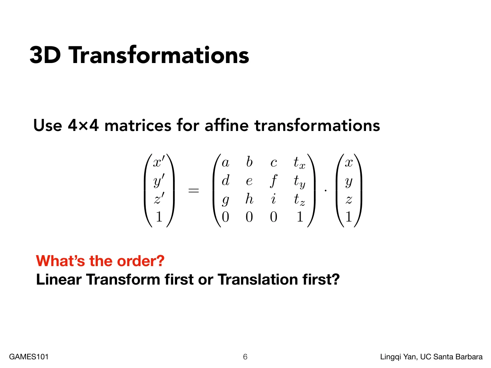
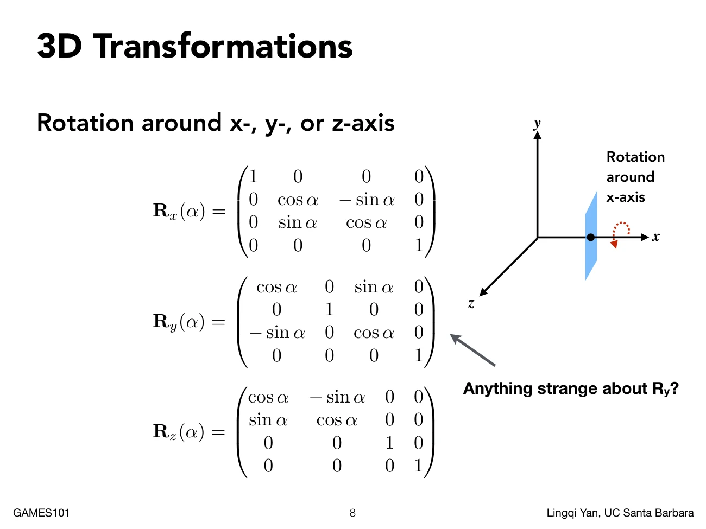
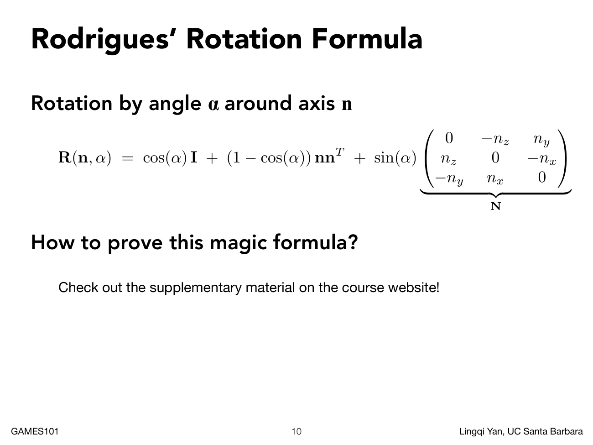
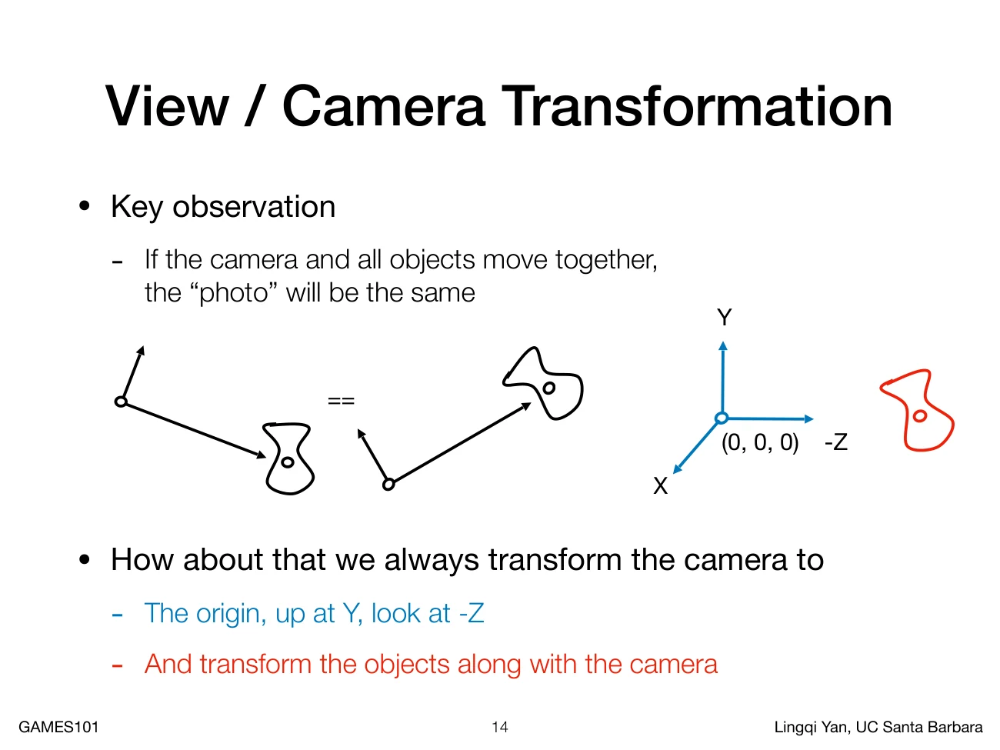
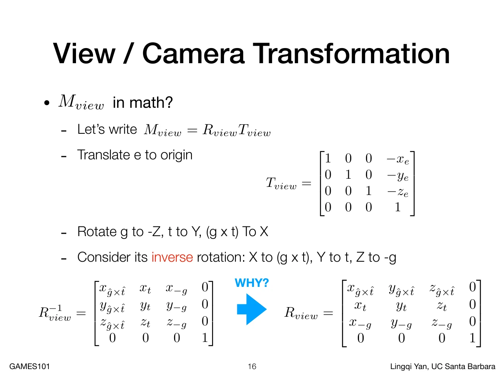
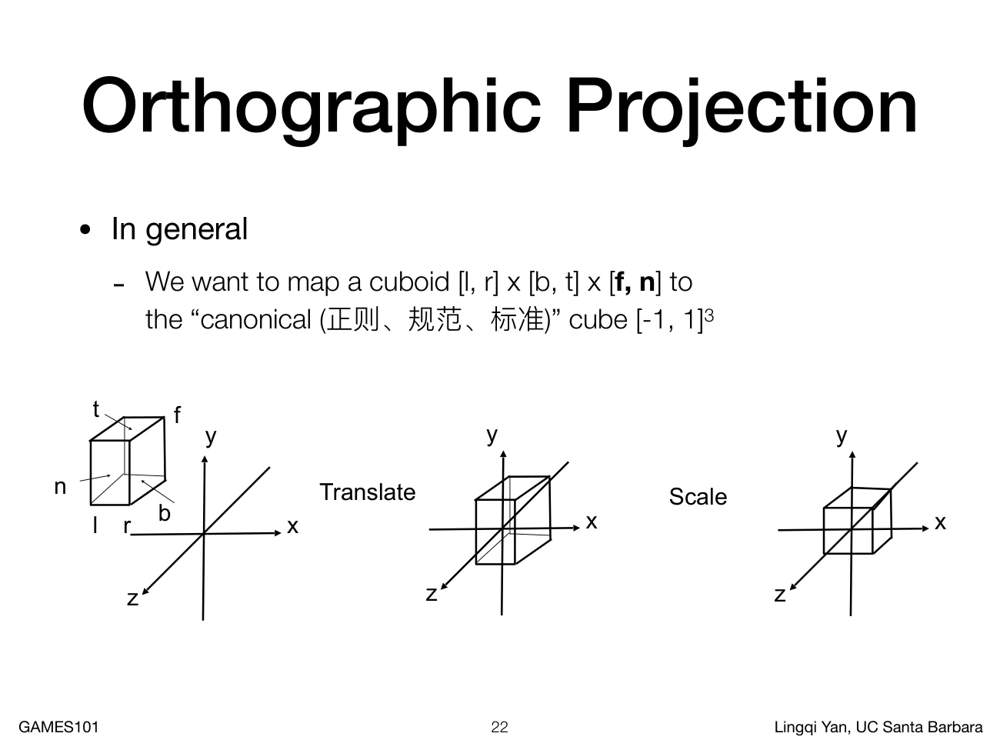
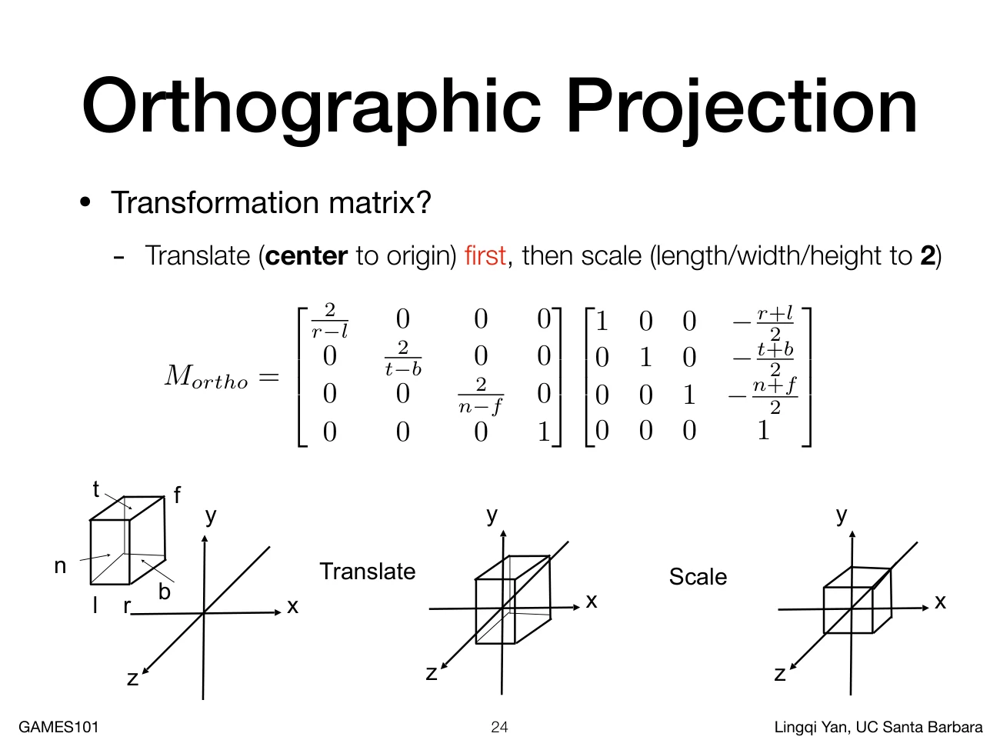
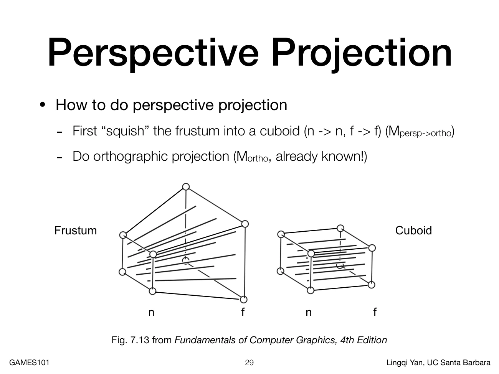
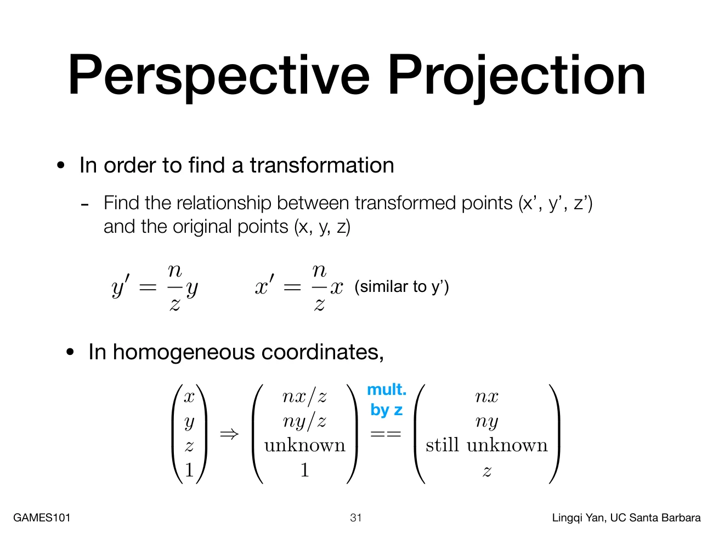
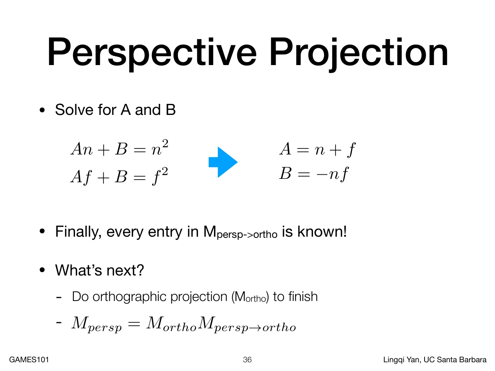

第 4 讲：变换（续）——观测变换与投影
从三维变换出发，讲清相机如何把世界摆到眼前，再把三维场景压成二维图像。
◆ 学完这一讲，你应该能
能写出三维仿射变换的齐次坐标矩阵，并说明线性变换与平移的复合顺序。
能解释欧拉角与 Rodrigues 旋转公式各自的作用和适用场景。
能推导视图矩阵 M_view，把任意相机变换到原点、朝 -Z、上方向为 +Y 的标准状态。
能写出正交投影矩阵 M_ortho，把任意长方体映射到标准立方体 [-1,1]^3。
能推导透视投影矩阵 M_persp，理解“先挤压视锥、再做正交投影”的两步法。
核心结论速记
三维点用 (x,y,z,1)、三维向量用 (x,y,z,0) 的齐次坐标表示，仿射变换统一写成 4×4 矩阵。
三维旋转可分解为绕 x、y、z 轴的欧拉角旋转，但绕 y 轴的矩阵符号与另外两个相反，因为右手系中 y 轴旋转方向特殊。
Rodrigues 公式给出绕任意轴 n 旋转角度 α 的矩阵：cosα·I + (1-cosα)nn^T + sinα·N。
视图变换的本质是“把相机搬到原点、朝 -Z、上方向 +Y”，同时所有物体跟着一起变，这样照片不变。
M_view = R_view · T_view，其中 T_view 把相机位置移到原点，R_view 把相机的 gaze、up、right 轴对齐到 -Z、+Y、+X。
正交投影把长方体 [l,r]×[b,t]×[f,n] 先平移到中心在原点，再缩放成长宽高均为 2 的标准立方体 [-1,1]^3。
透视投影分两步：先把视锥“挤压”成长方体（M_persp->ortho），再做正交投影（M_ortho），最终 M_persp = M_ortho · M_persp->ortho。
透视挤压利用相似三角形和齐次坐标的“同点不同表示”性质，并利用近平面和远平面上的 z 不变来解出矩阵第三行。
011. 三维空间里的齐次坐标与仿射变换
上一讲我们把二维变换写成了 3×3 矩阵，这一讲自然要升到三维。做法完全一样：再加一维。
- 三维点写成 \((x, y, z, 1)^T\)
- 三维向量写成 \((x, y, z, 0)^T\)
为什么点和向量最后一维不同？因为平移对向量没有意义——向量只表示方向，不该被“搬走”。齐次坐标用最后一维的 0/1 自动区分了这件事。更一般地，\((x, y, z, w)\) 在 \(w \neq 0\) 时表示三维点 \((x/w, y/w, z/w)\)，这为后面的透视投影埋下伏笔。
三维仿射变换统一写成 4×4 矩阵： \[ \begin{pmatrix} x' \\ y' \\ z' \\ 1 \end{pmatrix} = \begin{pmatrix} a & b & c & t_x \\ d & e & f & t_y \\ g & h & i & t_z \\ 0 & 0 & 0 & 1 \end{pmatrix} \begin{pmatrix} x \\ y \\ z \\ 1 \end{pmatrix} \] 左上角 3×3 负责线性变换（旋转、缩放、错切），最后一列负责平移。
顺序问题：矩阵乘法不满足交换律，所以“先线性变换还是先平移”结果不同。课件特意问“What’s the order?”，答案是：按你写的矩阵乘法顺序，从右往左作用在点上。若想先缩放再平移，应写成 \(T \cdot S \cdot p\)。
缩放矩阵和之前一样是对角阵，只是多了 z 分量：\(S(s_x,s_y,s_z) = \mathrm{diag}(s_x,s_y,s_z,1)\)。平移矩阵最后一列是 \((t_x,t_y,t_z,1)^T\)。

常见坑
把向量也写成 (x,y,z,1) 去做平移 → 向量被错误地移动 → 检查向量齐次坐标最后一维应为 0。
复合变换顺序写反 → 物体先平移后旋转，结果与预期不符 → 记住矩阵从右往左作用，先写的变换放在最右边。
UE / Unity 落地
UE 中 FMatrix 是 4×4 齐次矩阵，FVector 做 TransformPosition 时默认 w=1，做 TransformVector 时默认 w=0，正好对应点与向量的区别。
Unity 中 Matrix4x4.MultiplyPoint 会把点当 w=1 处理，MultiplyVector 把向量当 w=0 处理。
022. 三维旋转：欧拉角与绕任意轴旋转
三维旋转比二维复杂，因为可以绕三个轴转。课件先给出绕 x、y、z 轴的基本旋转矩阵：
\[ R_x(\alpha)=\begin{pmatrix}1&0&0&0\\0&\cos\alpha&-\sin\alpha&0\\0&\sin\alpha&\cos\alpha&0\\0&0&0&1\end{pmatrix} \] \[ R_z(\alpha)=\begin{pmatrix}\cos\alpha&-\sin\alpha&0&0\\\sin\alpha&\cos\alpha&0&0\\0&0&1&0\\0&0&0&1\end{pmatrix} \]
注意 \(R_y\) 的符号“看起来反了”： \[ R_y(\alpha)=\begin{pmatrix}\cos\alpha&0&\sin\alpha&0\\0&1&0&0\\-\sin\alpha&0&\cos\alpha&0\\0&0&0&1\end{pmatrix} \] 这不是笔误。在右手坐标系中，绕 y 轴从 z 转向 x 的方向与绕 x、z 轴的习惯相反，所以 \(\sin\) 项的符号对调。课件专门问“Anything strange about R_y?”，就是提醒这一点。
把三个基本旋转乘起来，就得到任意欧拉角旋转： \[ R_{xyz}(\alpha,\beta,\gamma)=R_x(\alpha)R_y(\beta)R_z(\gamma) \] 这就是飞行模拟里常说的 roll、pitch、yaw。欧拉角直观、好调，但有万向节死锁（gimbal lock）问题，且旋转顺序不同结果不同。
如果给定任意旋转轴 \(\mathbf{n}\)（单位向量）和角度 \(\alpha\)，用 Rodrigues 旋转公式： \[ R(\mathbf{n},\alpha)=\cos\alpha\, I+(1-\cos\alpha)\,\mathbf{n}\mathbf{n}^T+\sin\alpha\, N \] 其中 \(N\) 是由 \(\mathbf{n}\) 构成的反对称矩阵： \[ N=\begin{pmatrix}0&-n_z&n_y\\n_z&0&-n_x\\-n_y&n_x&0\end{pmatrix} \] 这个公式不需要欧拉角，直接绕任意轴旋转，在动画和物理里很常用。


常见坑
以为 R_y 的符号写错了 → 绕 y 轴旋转方向与直觉相反 → 记住右手系中 y 轴旋转的 sin 项符号对调。
欧拉角旋转顺序不固定 → 同样角度不同顺序结果不同 → 明确约定顺序（如先 roll 再 pitch 再 yaw）并保持。
Rodrigues 公式中 n 未归一化 → 旋转矩阵不正交、缩放异常 → 使用前对 n 做 normalize。
UE / Unity 落地
UE 中 FRotator 就是欧拉角（Pitch/Yaw/Roll），但内部常转成 FQuat 四元数来避免万向节死锁。
Unity 中 Transform.eulerAngles 是欧拉角，旋转计算用 Quaternion，底层等价于轴角/四元数表示。
033. 视图变换：把相机搬到原点
拍照分三步：摆好人和背景（模型变换）、找好角度放相机（视图变换）、按下快门（投影变换）。这一节讲第二步。
相机需要定义三件事：
- 位置 \(\tilde{e}\)
- 朝向（gaze direction）\(\hat{g}\)
- 上方向 \(\hat{t}\)（假设与朝向垂直）
关键观察：如果相机和所有物体一起移动，拍出来的照片是一样的。所以我们可以“作弊”：把相机搬到原点，上方向对齐 +Y，朝向对齐 -Z，同时让所有物体跟着做同样的变换。这样后续投影就简单了。
视图矩阵 \(M_{view}\) 要做的是：
- 把相机位置 \(\tilde{e}\) 平移到原点；
- 把 \(\hat{g}\) 旋转到 -Z；
- 把 \(\hat{t}\) 旋转到 +Y；
- 把 \(\hat{g} \times \hat{t}\) 旋转到 +X。
直接写这个旋转很难，因为“把 g 转到 -Z”不是基本旋转。技巧是先求逆旋转：逆旋转把 X 转到 \((\hat{g}\times\hat{t})\)、Y 转到 \(\hat{t}\)、Z 转到 \(-\hat{g}\)。而旋转矩阵的逆等于转置，所以： \[ R_{view}^{-1}=\begin{pmatrix} x_{\hat{g}\times\hat{t}} & x_{\hat{t}} & x_{-\hat{g}} & 0\\ y_{\hat{g}\times\hat{t}} & y_{\hat{t}} & y_{-\hat{g}} & 0\\ z_{\hat{g}\times\hat{t}} & z_{\hat{t}} & z_{-\hat{g}} & 0\\ 0&0&0&1 \end{pmatrix} \] 取转置就得到 \(R_{view}\)。再左乘平移矩阵 \(T_{view}\)（把 \(\tilde{e}\) 移到原点），最终： \[ M_{view}=R_{view}\,T_{view} \] 课件把模型变换和视图变换合称 ModelView Transformation，因为二者经常合并成一个矩阵。


常见坑
gaze 与 up 不垂直 → 构造的旋转矩阵不正交 → 先对 up 做 Gram-Schmidt 正交化，或确保输入垂直。
把 R_view 和 T_view 顺序写反 → 相机位置没有被正确搬到原点 → 记住先平移后旋转，即 M_view = R_view · T_view。
忘记对 g、t 归一化 → 旋转矩阵含缩放，物体变形 → 使用前统一 normalize。
UE / Unity 落地
UE 中 CameraComponent 的 Transform 就是相机位置与朝向，渲染时引擎内部会构造等价的 ViewMatrix。
Unity 中 Camera.worldToCameraMatrix 就是视图矩阵，约定也是相机看向 -Z、上方向 +Y。
044. 正交投影：把长方体压成标准立方体
投影把三维变成二维。正交投影（Orthographic Projection）假设相机在无穷远，平行线保持平行，没有“近大远小”。
最直观的理解：相机在原点、朝 -Z、上方向 +Y，直接把 z 坐标丢掉，就得到 xy 平面上的图。但这样得到的矩形大小任意，不方便后续处理，所以标准做法是：把任意长方体映射到标准立方体 \([-1,1]^3\)。
给定长方体范围：x 从 \(l\) 到 \(r\)，y 从 \(b\) 到 \(t\)，z 从 \(f\) 到 \(n\)（注意这里 n 是 near，f 是 far，因为朝 -Z 看，near 的 z 值反而更大，所以写 \([f,n]\)）。
两步：
- 平移：把长方体中心移到原点。中心是 \(((l+r)/2, (b+t)/2, (f+n)/2)\)，所以平移量是负的中心。
- 缩放：把长宽高分别缩放到 2（因为要从区间长度变成 [-1,1] 的长度 2）。缩放因子是 \(2/(r-l)\)、\(2/(t-b)\)、\(2/(n-f)\)。
合起来： \[ M_{ortho}= \begin{pmatrix} \frac{2}{r-l} & 0 & 0 & -\frac{r+l}{r-l}\\ 0 & \frac{2}{t-b} & 0 & -\frac{t+b}{t-b}\\ 0 & 0 & \frac{2}{n-f} & -\frac{n+f}{n-f}\\ 0&0&0&1 \end{pmatrix} \] 注意课件提醒：因为朝 -Z 看，near 的 z 值比 far 大（\(n > f\)），所以分母 \(n-f\) 是正的，这符合直觉。OpenGL 采用左手坐标系也是为了避免这种反直觉。


常见坑
把 near 和 far 的 z 值搞反 → 分母 n-f 变负，投影翻转 → 记住朝 -Z 看时 near 的 z 更大。
缩放因子写成 1/(r-l) 而不是 2/(r-l) → 映射到 [-0.5,0.5] 而不是 [-1,1] → 检查目标区间长度是 2。
UE / Unity 落地
UE 中正交相机（Orthographic Camera）常用于 UI 或俯视策略游戏，其投影矩阵就是 M_ortho。
Unity 中 Camera.orthographic = true 时使用正交投影，orthographicSize 控制半高。
055. 透视投影：先挤压视锥，再做正交
透视投影（Perspective Projection）更符合人眼和相机：近大远小，平行线汇聚于一点。课件引用 Euclid 的“平行线永不相交”说“Euclid was wrong??!!”，其实是透视投影下平行线在图像平面上的投影会相交，这是投影的几何性质，不是欧几里得几何错了。
透视投影的标准做法分两步：
- 挤压（squish）：把视锥（frustum）压成长方体，近平面不变，远平面不变，中间的点向近平面靠拢。记作 \(M_{persp\to ortho}\)。
- 正交投影：用上一节的 \(M_{ortho}\) 把长方体映射到标准立方体。
所以： \[ M_{persp}=M_{ortho}\,M_{persp\to ortho} \]
关键是怎么求 \(M_{persp\to ortho}\)。利用相似三角形：视锥中一点 \((x,y,z)\) 在近平面上的投影满足 \(y' = \frac{n}{z}y\)，\(x' = \frac{n}{z}x\)。在齐次坐标下，乘以 z 不改变表示的点： \[ \begin{pmatrix}nx\\ny\\?\\?\end{pmatrix}\sim\begin{pmatrix}x\\y\\z\\1\end{pmatrix} \] 所以矩阵的前两行已经确定：第一行是 \((n,0,0,0)\)，第二行是 \((0,n,0,0)\)。第三行负责 z，设为 \((A,B,0,0)\) 形式（与 x、y 无关）。利用两个条件：
- 近平面上的点 z 不变：\(An+B=n\)
- 远平面上的点 z 不变：\(Af+B=f\)
解得： \[ A=n+f,\quad B=-nf \] 于是： \[ M_{persp\to ortho}= \begin{pmatrix} n&0&0&0\\ 0&n&0&0\\ 0&0&n+f&-nf\\ 0&0&1&0 \end{pmatrix} \] 最后一行是 \((0,0,1,0)\)，因为齐次坐标的 w 分量要变成 z，这样除以 w 后才得到 \(nx/z\)、\(ny/z\)。



补充说明
课件中 n 表示近平面 z 值，f 表示远平面 z 值；由于朝 -Z 看，n > f，这与 OpenGL 等 API 的约定一致。
常见坑
忘记最后一行是 (0,0,1,0) → w 分量不对，透视除法失效 → 检查矩阵最后一行。
把 A、B 解错（如 A=n-f）→ 近远平面 z 不变的条件不满足 → 用 An+B=n 和 Af+B=f 联立求解。
挤压后没有做透视除法（除以 w）→ 图像没有近大远小 → 确保渲染管线在投影后执行齐次除法。
UE / Unity 落地
UE 中 Perspective Camera 的投影矩阵就是 M_persp，FOV 决定视锥开口大小。
Unity 中 Camera.projectionMatrix 在透视模式下就是 M_persp，Camera.fieldOfView 控制垂直 FOV。
引擎对照表
| 概念 / 效果 | Unreal Engine | Unity |
|---|---|---|
齐次坐标与仿射变换 | FMatrix 4×4，TransformPosition/TransformVector 区分点与向量 | Matrix4x4.MultiplyPoint / MultiplyVector |
欧拉角旋转 | FRotator（Pitch/Yaw/Roll） | Transform.eulerAngles |
绕任意轴旋转 | FQuat::FQuat(Axis, Angle) | Quaternion.AngleAxis |
视图矩阵 | CameraComponent 的 ViewMatrix | Camera.worldToCameraMatrix |
正交投影 | Orthographic Camera | Camera.orthographic = true |
透视投影 | Perspective Camera + FOV | Camera.projectionMatrix + fieldOfView |
术语双语表
| English | 中文 | 说明 |
|---|---|---|
| Homogeneous coordinates | 齐次坐标 | 用多一维表示点/向量，统一处理平移与投影。 |
| Affine transformation | 仿射变换 | 线性变换加平移，用 4×4 矩阵表示。 |
| Euler angles | 欧拉角 | 用绕三个轴的旋转角度描述三维旋转，如 roll/pitch/yaw。 |
| Rodrigues' rotation formula | Rodrigues 旋转公式 | 给定单位轴和角度直接构造旋转矩阵。 |
| View transformation | 视图变换 | 把相机搬到原点、朝 -Z、上方向 +Y，物体跟着变。 |
| Orthographic projection | 正交投影 | 平行投影，无近大远小，把长方体映射到标准立方体。 |
| Perspective projection | 透视投影 | 近大远小，平行线汇聚，先挤压视锥再做正交。 |
| Frustum | 视锥 | 透视相机可见的截头锥体区域。 |
| Canonical cube | 标准立方体 | [-1,1]^3，投影后的归一化空间。 |
课后练习
01 写出把点 (1,2,3) 先绕 z 轴旋转 90°，再平移 (1,0,0) 的 4×4 变换矩阵，并计算结果点。
查看答案
提示：
先旋转后平移，矩阵写成 T·R。
R_z(90°) = [[0,-1,0,0],[1,0,0,0],[0,0,1,0],[0,0,0,1]]，T = [[1,0,0,1],[0,1,0,0],[0,0,1,0],[0,0,0,1]]，M = T·R = [[0,-1,0,1],[1,0,0,0],[0,0,1,0],[0,0,0,1]]。作用到 (1,2,3,1)：先旋转得 (-2,1,3,1)，再平移得 (-1,1,3,1)，即点 (-1,1,3)。
02 解释为什么 R_y(α) 的 sin 项符号与 R_x、R_z 相反。
查看答案
提示：
从右手坐标系中绕 y 轴旋转的方向考虑。
在右手坐标系中，绕 y 轴从 z 轴转向 x 轴的方向与绕 x、z 轴的习惯相反，因此 R_y 中 sin 项的符号对调，写成 [[cos,0,sin],[0,1,0],[-sin,0,cos]] 才能保证旋转方向正确。
03 给定相机位置 e=(0,0,5)，看向 -Z，上方向 +Y，求视图矩阵 M_view。
查看答案
提示：
此时相机已在 z 轴上，只需平移。
gaze g=(0,0,-1)，up t=(0,1,0)，g×t=(1,0,0)。R_view 是单位阵（因为轴已对齐），T_view 把 (0,0,5) 移到原点，即平移 (0,0,-5)。所以 M_view = [[1,0,0,0],[0,1,0,0],[0,0,1,-5],[0,0,0,1]]。
04 正交投影中，若 l=-2, r=2, b=-1, t=1, n=1, f=-1，写出 M_ortho。
查看答案
提示：
代入公式，注意 n-f=2。
M_ortho = [[2/(r-l),0,0,-(r+l)/(r-l)],[0,2/(t-b),0,-(t+b)/(t-b)],[0,0,2/(n-f),-(n+f)/(n-f)],[0,0,0,1]] = [[0.5,0,0,0],[0,1,0,0],[0,0,1,0],[0,0,0,1]]。
05 在 UE 或 Unity 中创建一个透视相机，把 FOV 从 90° 改为 60°，观察画面变化，并解释投影矩阵中哪个量变了。
查看答案
提示：
FOV 变小，视锥变窄。
FOV 变小后，视锥开口变窄，画面中物体看起来更大（相当于拉近）。投影矩阵中与 x、y 缩放相关的项（如 1/tan(FOV/2)）变大，导致同样的三维点投影到更小的 NDC 范围，再映射到屏幕后显得更大。